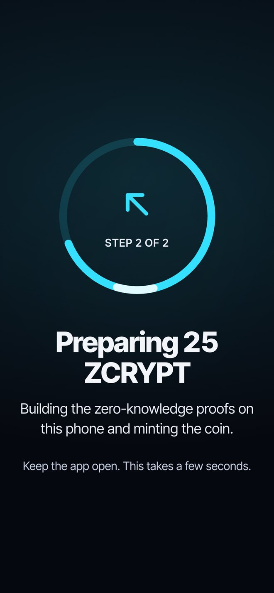
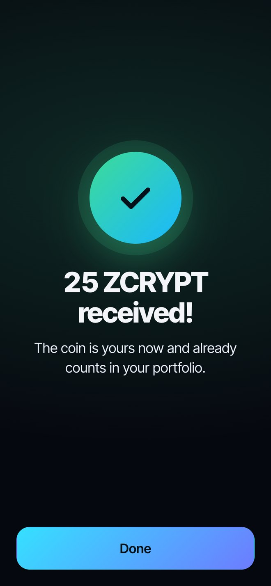

How it works
How ZCrypt works.
Five ideas explain the whole system: cash that travels like a message and that nobody can watch.
01
A coin is a sealed envelope.
Every coin sits on a public ledger as a sealed envelope. Anyone can see that the envelope exists. Only its owner knows what is inside, and only its owner holds the key that opens it.
To pay someone, your wallet destroys your envelope and creates a new one that only they can open. The ledger records that this happened.
It does not record who paid, who was paid or how much.
Under the hood
- The envelope is a commitment: a Poseidon2 hash of the coin's value, its coin type, the owner's key and a random blinding value. The ledger stores only the hash.
- All commitments are leaves of one Merkle tree, 62 levels deep, with room for more coins than will ever exist.
- Spending a coin publishes its nullifier, a second hash that only the owner's spend secret can produce. A nullifier can appear once. It cannot be linked back to its commitment.
- The recipient learns the new coin's details from a note encrypted to them with ML-KEM-768, the NIST post-quantum standard.
02
So a payment can be a file.




Dinner was great
It was. What do I owe you?
25 and we are even
Sent
Delivered
The key to an envelope is just a short piece of text. Put it in a file and whoever holds the file holds the money.
Send the file in any chat. The other person opens it in their wallet, and the wallet moves the coin to a new envelope that only they can open. From that moment your copy of the file is worthless.
You never ask for an address. They do not need an account. They do not even need coins to pay the fee, because the file carries its own.
A file is one way to pay, not the only one. You can also send to an address, typed or scanned from a QR code, and the payment arrives in the other wallet on its own.
If it can carry a file, it can carry a payment.
Until it is claimed, any copy of the file can claim it, and the first claim wins. Hand it over the way you would hand over cash.
Under the hood
- A payment file is a few lines of text holding the spend secret of a freshly made coin, plus a second small coin that pays the claim fee.
- Claiming is an ordinary private payment from that coin to a key only the claimer holds. One block later the old secret opens nothing.
- A normal send works without a file too: the encrypted note goes on the chain and the recipient's wallet finds it by scanning.
03
Checked without being seen.
If nobody can see the amounts, what stops someone paying out more than they have?
Every payment carries a mathematical proof that it followed the rules: the coins spent were real, they had not been spent before, and what came out equals what went in, less the fee. Every validator checks the proof. None of them ever sees the numbers.
A payment without a valid proof is rejected by every validator. No setting turns this off.
The network verifies a payment it cannot read.
You can watch the checks run on any transaction in the explorer. The rule that nobody can create coins goes one step further: it has been proven with a proof assistant. See Security.
Under the hood
The proof is a STARK: a zero-knowledge proof built only from hash functions. There is no trusted setup and no elliptic curve, so there is no secret ceremony to trust and nothing for a quantum computer to break.
| Proof system | Plonky3 STARK with FRI, over the BabyBear field, Poseidon2 hashing |
| Circuit | One fixed shape: 2 coins in, 3 coins out. 128 rows by 2,993 columns, 40 constraint sites |
| What it proves | Values are in range, one coin type, inputs equal outputs plus fee, correct nullifiers, correct new commitments, every input is in the tree |
| Soundness | 132 bits enforced by every node (112 FRI queries, 20 bits of proof of work) |
| Proof size | About 2 MB, verified by every validator in every block |
| Consensus | CometBFT 0.38. The state machine is native Rust |
The same statement also exists as a seven-instruction program a person can read. The circuit and the program are run against each other in testing, and the explorer replays the program on every transaction.
04
Every payment hides among all coins.
Privacy depends on how many others you could be mistaken for. Some private coins hide each payment among a handful of decoys.
Here there is one pool for every coin of every kind, and a payment is hidden among all of them. There is no public mode to forget to switch off, and no smaller pool to end up in by mistake.
Each new payment adds to the crowd the others hide in.
The network is young, so the crowd is still small. It grows with every payment.
Under the hood
- A spend proves that its coin is somewhere in the tree by walking a 62-step Merkle path inside the circuit. The path is never revealed, so the coin could be any leaf.
- The coin type is hidden inside the commitment. One thing does show: a payment in ZCRYPT is a single proof, and a payment in any other coin carries a second proof for its fee. An observer can tell those two apart, but not which other coin it is.
- Every payment has the same shape, two inputs and three outputs. A one-coin spend is padded with an empty input, so even the number of coins you spent is hidden.
05
What else it does.
Trade without an exchange
Two people each lock what they are offering. Both sides complete together or neither does. No company holds the money in between, so no company can freeze it. A swap is not yet as private as a payment: the two locks are public, with their amounts, coin types and the one-time keys of both sides. See a sample trading screen
Make your own coin
Choose a name, a precision and a supply. Your coin is sent as a file and hidden in the same crowd. On the ledger it looks like a payment in any other issued coin. No code is needed. See how to make one
Bitcoin, in and out
Lock Bitcoin and receive zBTC, a private coin backed by it. Every validator checks the deposit against Bitcoin's own blocks before any zBTC exists. To get Bitcoin back, you lock zBTC and the reserve pays you. See both directions
Built to resist quantum computers
Payments use STARK proofs, hash-based ownership, ML-KEM encryption and ML-DSA signatures, with no elliptic curves. A payment recorded today is built so that a future quantum computer cannot open it. Block signing and the Bitcoin bridge still use today's signatures; neither can be used to forge a coin. Exactly why it is post-quantum
Under the hood
- Swaps are hash-locked escrows on the chain: each side locks coins under the same secret, and revealing it to collect one side releases the other. A timeout refunds both. The escrows are public today; the wallet uses a fresh key for each swap, so they do not point at your address.
- Your own coin is an entry in an on-chain registry that fixes its ticker, precision and hard cap. Each mint needs an ML-DSA signature from the issuer's key set.
- The Bitcoin bridge has two halves. Coming in, you lock Bitcoin under a hash lock, and a Bitcoin light client inside consensus checks a Merkle inclusion proof of that deposit (SPV) against the block headers validators track. No signer votes on a mint. Going out, you lock zBTC in a burn escrow under a hash lock and the bridge operator pays Bitcoin from the reserve; if the payment never comes, the lock times out and your zBTC returns. The reserve key is being placed under MPC, created in a key ceremony.
- Post-quantum: hashes for commitments and proofs, ML-KEM for notes, ML-DSA for issuers.
Numbers
Enforced by every validator.
Public
What is public.
Some things are public on purpose:
- Staking. Who validates, and how much they have staked.
- A trade's escrow. The amount and coin of that one trade, so both sides can see what is locked. The payments before and after it are private.
- The Bitcoin side of the bridge. Deposits and withdrawals are ordinary Bitcoin transactions. The Bitcoin is held in a reserve whose key is being placed under MPC, created in a key ceremony.
- That a payment happened. The chain shows it took place and nothing else about it.
Block signing and the Bitcoin bridge use today's signature schemes, not post-quantum ones. Neither can be used to forge a coin.
The full list is in the privacy model. The design is in the whitepaper.
Who
Who builds it.
ZCrypt is built by Echelon Labs LLC. All of the code is public under the MIT licence: the chain, the proofs, the wallet and this website.
The network has been running since 28 October 2026. It is at block 1,894,272 with two validators, and 315,089 of the 21,000,000 ZCRYPT have been issued. These figures are read live from the chain.
Contact: security@zcrypt.network for security reports, @zcryptnetwork for everything else.